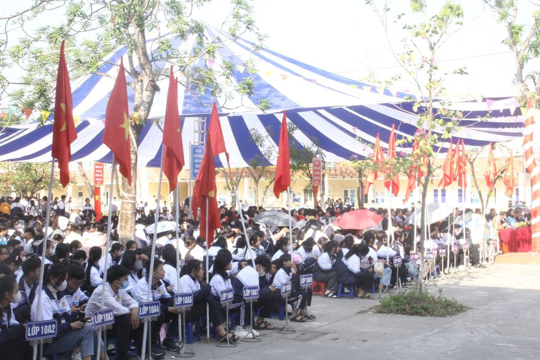
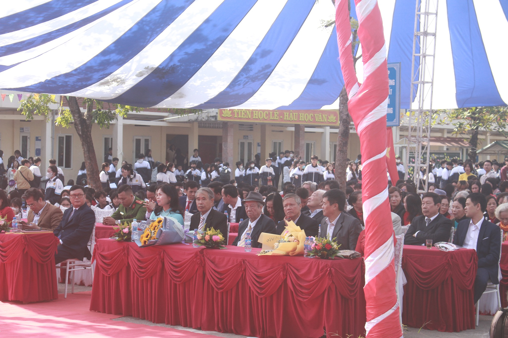

LỄ TRI ÂN NGÀY NHÀ GIÁO VIỆT NAM 20/11/2023
Hạnh phúc vinh quang bởi các thầy
Vì đời sự nghiệp ấy trồng cây
Cho dù sóng gió không hề nản
Cám dỗ dòng đời vẫn cứ say
Đất nước ơn người công dạy dỗ
Quê hương nặng nghĩa trước hiền tài
Tình yêu trách nhiệm ngang trời biển
Tạc dạ ghi lòng chẳng nhạt phai...!
Lúc sinh thời Bác Hồ từng nói: “Người thầy giáo tốt, thầy giáo xứng đáng là thầy giáo - là người vẻ vang nhất. Dù là tên tuổi không đăng trên báo, không được thưởng huân chương, song những người thầy giáo tốt là những người anh hùng vô danh....”
Và những người anh hùng vô danh đó chính là “Những bông hoa trong vườn Bác" tỏa ngát hương xây đời, từ những việc làm bé nhỏ, dung dị giữa đời thường.
Nhân ngày nhà giáo Việt Nam, em xin gửi tới các thầy cô ngàn vạn lời kính chúc tốt đẹp nhất. Kính chúc các thầy cô dù miền xuôi hay miền ngược, dù còn trẻ hay đã già, dù nông thôn hay thành thị luôn được mạnh khỏe, bình an, mãi mãi là những người thầy đáng kính của muôn vàn thế hệ.
TRI ÂN!

Trường Cao đẳng FPT Polytechnic được thực hiện đào tạo và cấp bằng Cao đẳng nghề theo Quyết định của Tổng cục dạy nghề bắt đầu từ ngày 01/07/2010.
Trường hướng tới mục tiêu cung cấp kỹ năng nghề nghiệp chất lượng cao cho người học, đảm bảo được tính cạnh tranh trong môi trường phát triển ngày càng cao.
Với nhận định nền kinh tế Việt Nam đang phát triển mạnh mẽ trong đó có sự đóng góp to lớn từ trên 500.000 doanh nghiệp vừa và nhỏ quy mô từ 10 đến 200 nhân viên, FPT Polytechnic nhắm tới mục tiêu cung cấp nguồn nhân lực được đào tạo tốt cho nhu cầu phát triển của không chỉ các doanh nghiệp lớn mà còn cho các doanh nghiệp này.
Hướng tới người học chung trên toàn Việt Nam, chương trình cao đẳng của trường được thiết kế dựa trên những kỹ năng thiết yếu nhất để làm việc và tương thích với các hệ thống đào tạo tiên tiến trên thế .